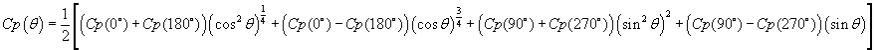

风压剖面用于考虑流元素中的风向影响。 CONTAM 是指将建筑物正面的平均风压系数与风在建筑物正面的入射角相关联的函数，即 风压剖面 or f(q ）。该函数的更详细解释在 处理天气和风 部分。配置文件以图形方式显示在屏幕底部，以便直观地查看数据。
姓名： 这是您为风压剖面指定的名称。风剖面名称在项目中必须是唯一的。
说明： 用于输入特定风压曲线的更详细描述的字段。
数据点： 您最多可以输入 16 个角度/压力系数对。压力系数的范围是 -1 到 1。第一个值必须位于风向 0 度处。角度零表示风直接吹向开口所在的表面。自动假定 360° 角度处的相同值。 90° 表示风从右侧平行于墙壁吹来，270° 表示从左侧吹来。通过相对于墙壁形成这些角度，可以在建筑物周围的不同墙壁上使用相同的轮廓，而无需根据建筑物的几何形状进行修改。
要更新图表上输入的数据点，请按曲线拟合框架中的“重绘”按钮。按下此按钮将在图表上重新绘制数据，并按角度对数据点进行排序。
选择曲线拟合：
曲线拟合 1 ：此曲线拟合只是连接数据点并在数据点之间进行线性插值。
曲线拟合2 ：此曲线拟合使用点之间的非线性曲线拟合（三次样条）连接所有用户数据点。
曲线拟合3 ：此曲线拟合需要五个数据点 - 每个数据点对应风向角度 0°、90°、180°、270° 和 360°。该曲线根据 Walker 和 Wilson 提出的以下方程将趋势线拟合到这五个数据点（忽略任何其他数据点）[ 沃克和威尔逊 1994 and 2005年美国采暖及制冷工程师协会 第 27.6 页]。
